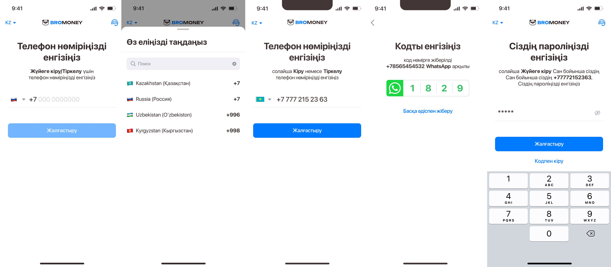
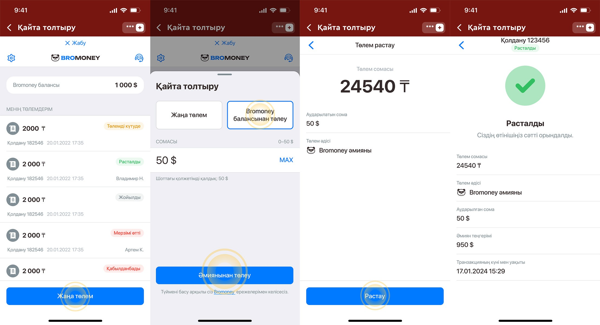

1) Bromani әмияныма қалай кіруге болады?
Зайдите по ссылке https://m.bromoney.net.
Өңіріңізді таңдаңыз, нөміріңізді енгізіңіз. WhatsApp-қа келген 4 таңбалы кодты енгізіңіз. Құпия сөзді жасап, оны есте сақтаңыз.
2) Bromoney-дан қаражатты қалай шығаруға болады?
Bromani шотыңыздан қаражат шығару үшін басты беттегі Шығару батырмасын басыңыз.
Барлығы екі әдіс қолжетімді:
«Крипто» батырмасын басыңыз.
Қаражат шығару тек USDT валютасында және екі желіде қолжетімді: TON және BEP-20.
Желі — қаражат жіберілетін крипто әмиян желісін таңдаңыз.
Мекенжай — қаражат жіберілетін крипто әмиянның мекенжайын енгізіңіз.
Содан кейін жоғарғы оң жақтағы «Сақтау» батырмасын басыңыз. Сома өрісіне доллармен соманы енгізіп, «Жалғастыру» батырмасын басыңы
Ақша аудару — ақшаны қабылдайтын банкті таңдаңыз (қазіргі уақытта тек Kaspi Bank қолжетімді).
Мәліметтер — карта нөмірін немесе телефон нөмірін енгізіңіз.
Алушының аты — карта иесінің немесе банк шоты ашылған адамның аты-жөні.
Пікір — міндетті емес (қажет болса, қосымша ақпарат енгізуге болады).

3) Bromoney әмияныңыздан Olimp ойын шотыңызға қалай ақша салуға болады?
Ойын шотыңызды әмиян балансынан толтыра аласыз.Ол үшін Olimp жүйесіне кіріп, «Толтыру» бөліміне өтіңіз. Төлем әдісі ретінде Bromoney-ді таңдап, әмиян балансынан төлеңіз.
4) Қай банктерден ақша шығаруға болады?
Қазақстан пайдаланушылары үшін ақша шығару тек Kaspi Bank картасы арқылы қолжетімді.
5) Құрылған ақша шығару сұранымын жоюға бола ма?
Егер агент сұранымды қабылдап, оны өңдеу мәртебесіне ауыстырған болса, сұранымды жою мүмкін емес.
6)Ақша шығарудың ең төменгі сомасы қанша?
Криптовалюта арқылы ақша шығару да қолжетімді. Сондай-ақ әмиян балансынан ойын шотыңызды толтыра аласыз:Olimp → Толтыру → Bromoney → әмиян балансынан төлеу.
7) Қаражаттың келуіне қанша уақыт кетеді?
• Әмиян балансынан ойын шотын толтырған кезде: қаражат бірден түседі.
• Агент арқылы толтырған жағдайда: тексерудің орташа уақыты 5–75 минут аралығында. Өтінішіңізді тезірек тексеру үшін чек пен толық аты-жөніңізді тіркеңіз.
8) Неліктен әмиянды тікелей толтыра алмаймын?
Әмиянға тікелей ақша салу мүмкін емес. Ойын шотыңызды серіктес (Olimp) арқылы «Картадан Bromoney картасына аудару» әдісімен толтыра аласыз.
9) Аккаунтымды қалай өшіруге болады?
Bromoney қосымшасына өтіңіз → жоғарғы сол жақ бұрыштағы Параметрлер →Аккаунтты өшіру.
10) Неліктен бұрын өшірілген мәліметтерді қоса алмаймын?
Мәліметтер бірегей болып табылады; бұрын қосылған мәліметтерді қайта енгізу мүмкін емес. Досыңыздың немесе туысыңыздың карта нөмірін қосуға болады.
11) Неліктен менің Bromoney әмиянымдағы баланс өзгереді?
Bromoney балансында көрсетілген сома цифрлық доллар бағамына байланысты өзгеруі мүмкін.